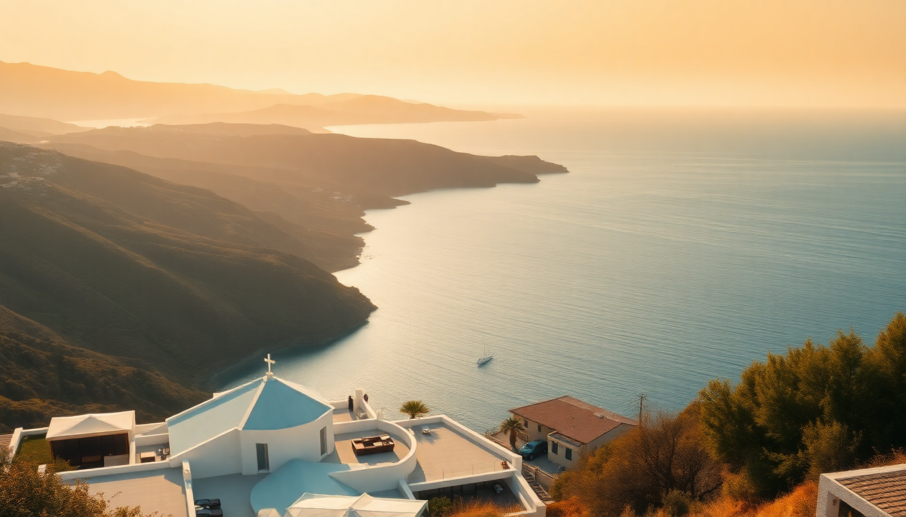

Best Beaches in Greece: Cyclades, Ionian & Crete Guide

I spent three weeks island-hopping last June, chasing the best beaches across the Cyclades, Ionian, and Crete. The Instagram photos lie — not every cove is paradise, and some of the most famous strips are packed with sunbeds you’ll pay 50€ for. Here’s what I actually found worth the ferry ticket.
Which Cyclades beaches actually deliver in Mykonos and Santorini?
Mykonos gets hyped for its party scene, but the beaches on the south coast are genuinely good — if you know where to go. Paradise Beach is a loud, boozy mess by 2 PM. Skip it. Instead, head to Agios Sostis on the north coast: no sunbeds, no bars, just a long stretch of coarse sand and locals swimming after work. We parked the rental scooter and had the place mostly to ourselves on a Tuesday.
Santorini is trickier. The caldera-view beaches are all black volcanic sand, and they get scorching by noon. Perissa Beach was our favorite — dark sand, clear water, and a row of tavernas where you can order a cold Mythos and grilled octopus. Red Beach near Akrotiri looks stunning in photos, but the path down is loose gravel, and the pebbles hurt your feet. Go early or skip it.
Top Cyclades picks:
- Agios Sostis (Mykonos) — unspoiled, no amenities, bring water
- Perissa Beach (Santorini) — black sand, family-friendly, good tavernas
- Kolymbithres (Paros) — granite rock formations create natural pools, worth a day trip from Mykonos
- Agios Georgios (Naxos) — shallow, windy, great for kite-surfing beginners
What are the best Ionian beaches on Corfu and Zakynthos?
The Ionian side is greener and less wind-blasted than the Cyclades. Corfu surprised me. The northeast coast has pebbly coves with water so clear you see fish from the shore. Paleokastritsa is the most famous, and it’s popular for a reason — six small bays, each with a different vibe. We swam at Agios Spyridon, the quietest one, then hiked up to the monastery for views.
Zakynthos is all about Navagio Beach (the shipwreck beach). Yes, it’s a tourist circus. Boats queue up, and you can’t actually land on the sand between May and October because of landslides. But the boat trip from Porto Vromi is worth it just to see the blue from the water. If you want to swim, head to Gerakas Beach on the south — loggerhead turtles nest there, and the water is shallow for kids.
Top Ionian picks:
- Paleokastritsa (Corfu) — six coves, monastery hike, rent a pedal boat
- Navagio (Zakynthos) — photo stop only, take the 10 AM boat to beat crowds
- Gerakas (Zakynthos) — turtle sanctuary, no sunbeds, very quiet
- Myrtos (Kefalonia) — white pebbles, electric-blue water, steep drive down
What are the must-visit beaches in Crete?
Crete is a whole country in one island. The beaches vary wildly by region. Elafonisi on the southwest coast looks like the Caribbean — pink sand, lagoon-like shallows, and water that stays warm into October. It’s a 90-minute drive from Chania through winding mountain roads. We left at 7 AM and had the beach nearly empty until 10.
On the north coast, Balos Lagoon is the postcard spot. The water is turquoise and shallow for hundreds of meters. The dirt road to the parking lot is brutal — rent a 4x4 or take the ferry from Kissamos. We took the ferry and it was smoother, though you share the beach with a hundred other people by lunch.
For something raw, Preveli Beach on the south coast has a palm-tree-lined river that meets the sea. You hike down 300 steps, then walk along the riverbank through a forest. It feels like a lost world. The beach itself is pebbly, so bring water shoes.
Top Crete picks:
- Elafonisi — pink sand, family-friendly, arrive before 9 AM
- Balos Lagoon — ferry from Kissamos, shallow lagoon, busy by 11
- Preveli Beach — river hike, palm grove, water shoes essential
- Vai Beach — Europe’s largest natural palm forest, east Crete, good for a quiet afternoon
When is the best time to visit these Greek beaches?
June and September are the sweet spots. The water is warm enough (22-25°C), the crowds are thin, and prices for ferries and rooms are half of July and August. I went mid-June and never queued for a sunbed. July and August are brutal — 35°C heat, sea-bus queues in Mykonos, and Balos Lagoon feels like a shopping mall.
May is good for hiking and empty beaches, but the water is cold — especially in the Cyclades. October still works for Crete and the Ionian, but many tavernas and boat tours close by mid-month.
How do you get between these islands efficiently?
Ferries are the backbone. Blue Star Ferries runs the big car ferries between Piraeus and Crete (8 hours to Heraklion). Seajets does the fast catamarans between Mykonos, Santorini, and Naxos — 2 hours between islands, but book a week ahead in summer. I used Ferryhopper to compare schedules and bought tickets on my phone.
For the Ionian, fly into Corfu or Zakynthos airport, then rent a car. Ferries between the Ionian islands are slower and less frequent than the Cyclades. We took a car ferry from Corfu to Zakynthos via Igoumenitsa — 4 hours total, not scenic.
Pro tip: If you’re doing Cyclades + Crete, take the overnight ferry from Santorini to Heraklion. It saves a hotel night and arrives at 6 AM, giving you a full day on Crete.
FAQ
Are there any free beaches in Mykonos without sunbed fees? Yes. Agios Sostis and Fokos Beach have no sunbeds or umbrellas — just sand and sea. You’ll need to bring your own towel, water, and snacks. Fokos has a tiny taverna at the far end that sells cold beers. These beaches are quieter and feel more like the old Mykonos before the mega-resorts took over.
Can you swim at Red Beach in Santorini safely? You can, but it’s not comfortable. The pebbles are sharp, the water gets deep quickly, and there’s no shade. The path down from the parking area is loose and steep — I saw a woman twist her ankle. If you want a Santorini beach day, stick to Perissa or Kamari, which have organized sunbeds and gentler entry.
Is Balos Lagoon in Crete worth the drive? Yes, but only if you go early or late. The lagoon itself is stunning — shallow, warm, and the color is unreal. The problem is the crowds. If you arrive after 10 AM, you’ll park 1 km from the beach and walk through dust. Take the ferry from Kissamos instead; it drops you right at the beach and includes a stop at Gramvousa Island with a Venetian fort. We did the 8 AM ferry and had the lagoon mostly to ourselves until 11.
Conclusion
- Cyclades: Mykonos has hidden gems like Agios Sostis; Santorini’s Perissa is your best bet for a real swim.
- Ionian: Corfu’s Paleokastritsa coves are worth the drive; skip landing at Navagio, just take the boat tour.
- Crete: Elafonisi and Balos are the headliners, but Preveli’s river hike is the most unique experience.
- Timing: June and September beat July and August for comfort and cost.
- Getting around: Ferries are reliable in the Cyclades; rent a car in Crete and the Ionian.